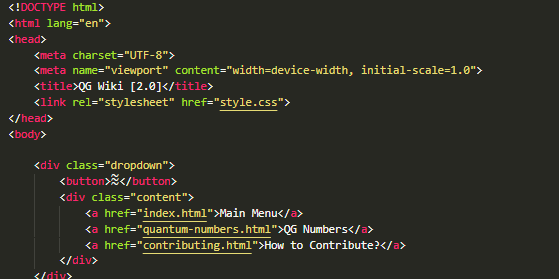

How To Contribute?
You can Contribute this wiki by making your own pages with HTML (and a bit CSS)
GUIDE:
Step one: you may need to "git clone" the repo of Website (Yeah It's Open Source Website) [REQUIRES GIT] [1]
Step Two: If you know HTML, Copy-Paste Any File Like index.html from the Project folder
Step Three: Edit the contents the file except this stuff: 
(NOTE: "div class=dropdown" stuff is from dropdown menu which is placed at Top of )
Step Four: Sent it to My Discord Server [2]
Rules / Guidelines:
- You may need to learn HTML + CSS, there's even videos about HTML so if you need just search it on YT and Google. [3] [4]
- NOT Recommended to make NSFW (actually you shouldn't), Over-Gibberish stuff or Somethings, since None likes it you know
Sources:
[1] - Git Download, For Windows
[2] - Gigane's ACTIVE Discord Server
[3] - HTML + CSS Course on YT (MADE BY Bro Code)
[4] - EXTRA: HTML CheatSheet